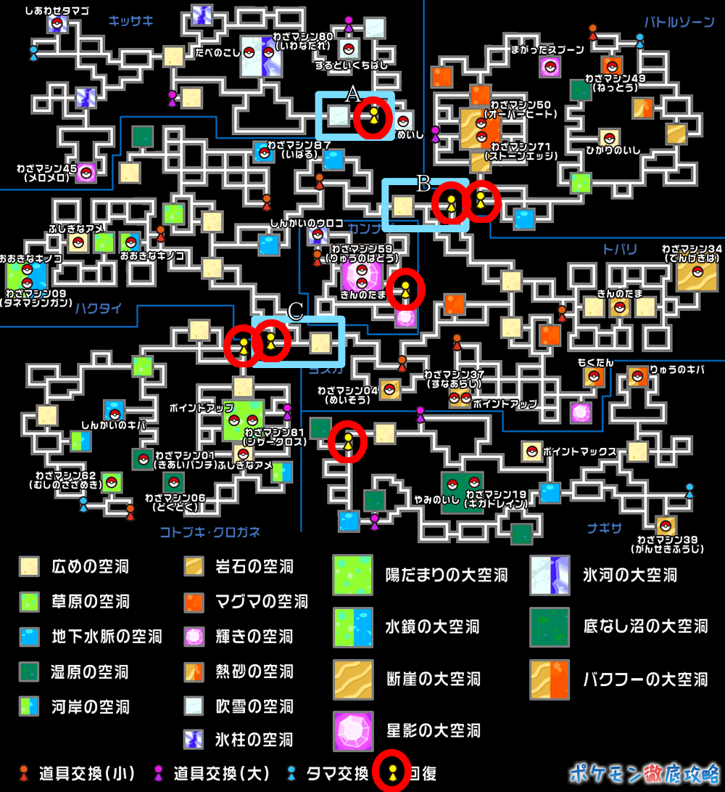
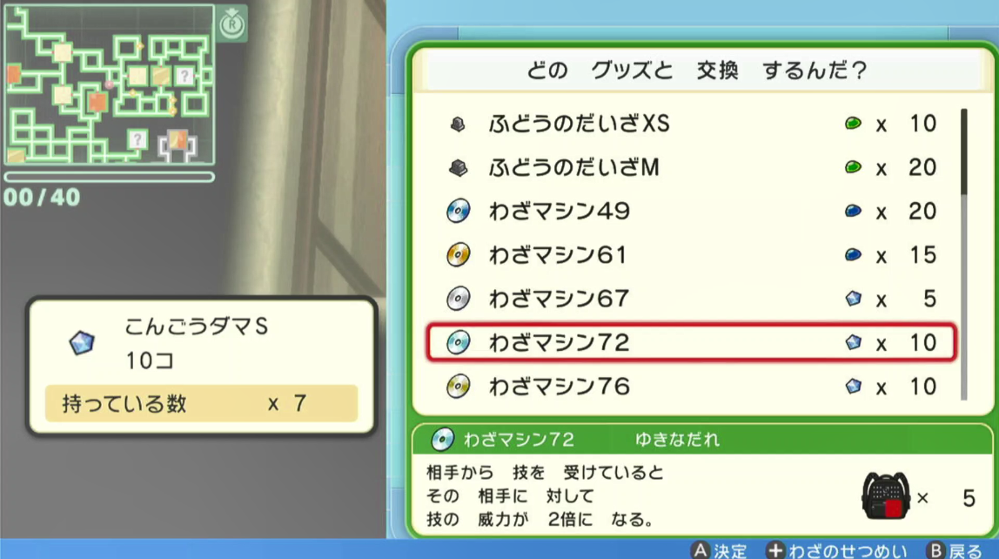
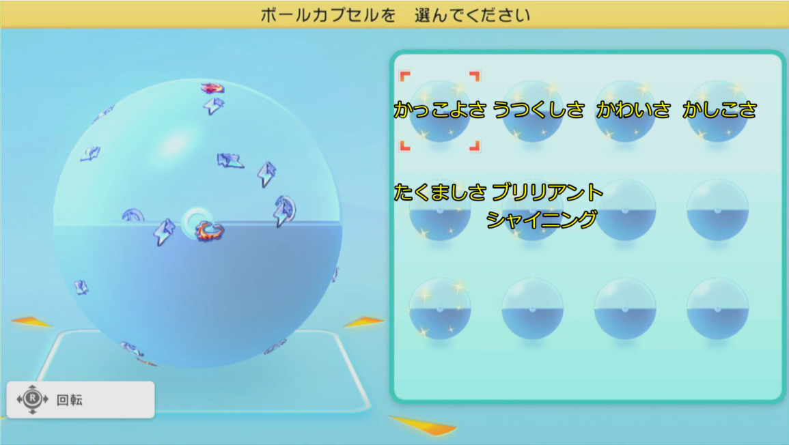

A連打
Aボタンを押し続ける。
- スタート位置
- どこでも
- 聞かれる数
- なし
ボードの「BOOT」と書かれたボタンを使います（「RESET」は押さない）。押し方は2つだけです。
止まっているあいだ、LEDは機能の色で点の数だけ点滅をくり返します。たとえば は「黄色が2回ずつ点滅」＝ 卵を孵す。
卵の3つは準備が共通です（卵の機能の共通準備）。
スタートすると、機能によってはLEDが水色になって数を聞いてきます。
Aボタンを押し続ける。
卵の3つの機能（黄1〜黄3）で、先にやっておくこと。
育て屋の前で回って卵をもらう、をくり返す。卵はボックスに送られる。ボックス数×30個もらったら本体がスリープする。
ボックスの卵を左の列から5個ずつ手持ちに入れ、育て屋の前で回って孵す。孵ったポケモンはボックスに戻す。
先にボックス数×30個の卵をもらい、そのあと全部孵す。
ボックスのポケモンを左上から順に逃がす。決めたボックス数を逃がしたら止まる。逃がしたポケモンは戻らない。
地下大洞窟の「ふぶきのくうどう」を左右に歩いて野生と戦い、PPが減ったら右下の山男に戻って回復する、をくり返す。

トバリデパートで台座を買う → 地下の山男で台座を玉に替え、玉で技マシンに交換する → デパートで技マシンを売る、をくり返す。お小遣いがたまったら、設定に合わせてドーピングアイテムを買って続けるか、止まる。
| 売値 | 黒字になる玉の数 | 技マシン |
|---|---|---|
| 2750円 | 30個以下 | 14,15,25,38,50,52,64,68,92 |
| 1500円 | 17個以下 | 01,02,03,06,07,13,19,21,22,23,24,26,27,29,30,31,34,35,36,40,42,43,44,45,47,48,49,53,55,57,59,60,62,65,66,71,72,74,79,80,81,83,84,85,86,88,89,91 |
| 1250円 | 15個以下 | 95,99 |
| 1000円 | 11個以下 | 09,11,16,17,18,20,28,33,37,39,46,51,54,56,58,61,63,73,76,90,93,94,96,97,98,100 |
日付が変わると交換リストが変わるので、日をまたぐ前に止める。

地下金策で使う値を入れて保存する。始める前と、交換レートが変わったときにやる。
売値・玉の個数・所持金は、押さないままだと前の値が残る。所持金は毎回入れ直す。
ポケモン6匹を連れて広場を回り、1匹ずつ話しかけて、拾ったきのみやボールを受け取る、をくり返す。
マスターランクに出て、ダンスのリズムに合わせてAを押す、をくり返す。3回に1回くらい優勝できる。

Aを押すタイミングを0.1秒単位でずらして保存する。ロード時間は本体ごとに違うので、最初に合わせる。
孵すポケモンのサイクル数（攻略サイトの図鑑に載っている）に合わせて押す。
| 押す回数 | 0 | 1 | 2 | 3 | 4 | 5 | 6 | 7以上 |
|---|---|---|---|---|---|---|---|---|
| サイクル | 40 | 5 | 10 | 15 | 20 | 25 | 30 | 35 |
| 光り方 | 意味 |
|---|---|
| 青緑で光りっぱなし | 挿した直後。登録中 |
| 機能の色で点滅をくり返す | 止まっている。点滅の回数と色で今の機能が分かる |
| 機能の色で光りっぱなし | 動いている |
| 水色 | 数を聞いている（4秒間） |
| 白く一瞬光る | 押した1回を数えた |
| 設定のあとにいろいろな色で点滅 | 保存した値を知らせている（地下金策の設定、コンテストのタイミング調整） |